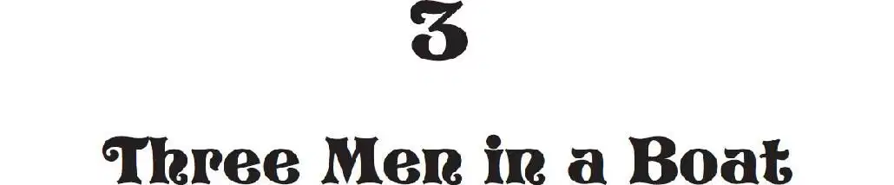

“We’ve come to the time of pirates!” Jack said.
“Pirates?” squeaked Annie. “Like in Peter Pan?”
Jack flipped to the picture that showed the parrot, the sea and the ship.
He read the caption under the picture:
Three hundred years ago, pirates raided Spanish treasure ships in the Caribbean Sea.
He grabbed his notebook and pencil from his pack. He wrote:
He turned to the next page. There was a picture of a pirate flag. He read:
The skull-and-crossbones flag was called the Jolly Roger.
“Let’s go!” said Annie.
“Wait!” said Jack. “I want to make a drawing of the flag.”
He propped the pirate book in the sand.
He started drawing the Jolly Roger flag.
“Don’t copy the picture in the book,” said Annie. “Look at the real thing.”
But Jack pushed his glasses into place and kept drawing.
“Jack, some pirates are getting into a rowboat,” said Annie.
Jack kept drawing.
“Jack, the boat’s leaving the big ship,” said Annie.
“What?” Jack looked up.
“Look.” Annie pointed.
Jack looked. He saw the rowboat coming toward the shore.
“Run!” said Annie. She started running toward the tree house.
Jack jumped up. His glasses fell off.
“Hurry!” Annie called back to him.
Jack went down on his knees. He felt for his glasses. Where were they?
Jack saw something glinting in the sand. He reached for it. It was his glasses. He snatched them up.
Then he threw his notebook and pencil into his pack. He put the pack on his back.
He grabbed his boots and his socks. And he took off running.
“Hurry! They’re coming!” Annie was at the top of the rope ladder.
Jack looked back at the sea. The pirates were closer to the shore.
Suddenly Jack saw the pirate book. In all the confusion he had forgotten it. It was still propped in the sand.
“Oh man, I forgot the book!” he said. He dropped his socks and boots below the tree house.
“Come on, Jack!” Annie shouted.
“I’ll be right back!” Jack called. “I’ve got to get the book!”
“Jack, forget it!”
But Jack was already running toward the water.
Jack grabbed the book.
“Come back!” Annie shouted.
Jack shoved the book into his backpack.
Suddenly a giant wave carried the rowboat right onto the beach.
“Run, Jack!” shouted Annie.
Three big pirates splashed onto the sand.
They had knives in their teeth.
They had pistols in their belts.
They charged toward Jack.
“Run, Jack, run!” cried Annie.